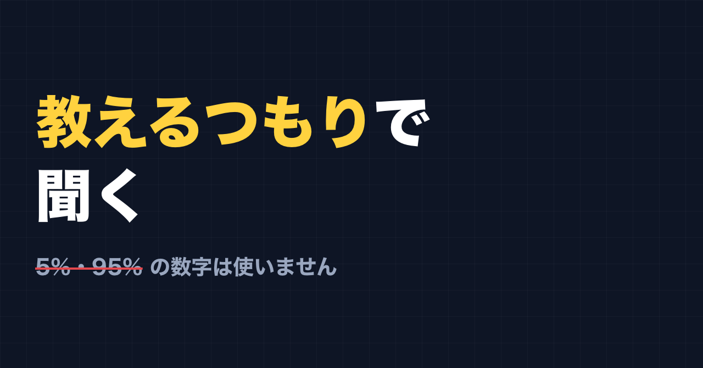
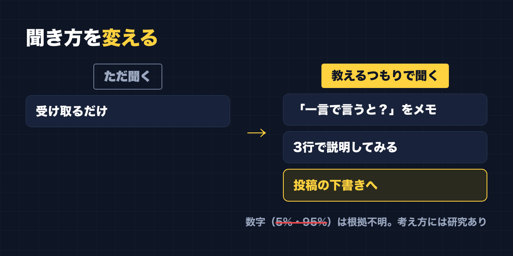

1. タイトルをコピーして、note のタイトル欄に貼る
2. 「本文1をコピー」から順にコピーし、note の本文に貼る
3. 青いラベルの位置に、images フォルダの同じ名前の画像を入れる（本文には貼られません）
※ 見出しが普通の文字になった場合は、その行を選んで「大見出し」を設定してください

「ただ聞くだけより、誰かに教えるつもりで聞いてください。噛み砕きながら聞くと、残りやすくなります」
仕事で人に教える側に立つとき、私はよくこう話します。
聞いている側は、どうしても「受け取るだけ」になりがちです。でも、「あとで誰かに説明するなら」と思いながら聞くと、聞き方が変わります。
この話、副業の勉強にもそのまま使えると思っています。
私が使ってきた「5%と95%」の数字
この話をするとき、私はこんな数字も一緒に出してきました。
「聞くだけだと5%しか残らない。人に教える前提だと95%残る」
いわゆる「ラーニングピラミッド」の数字です。研修の資料やネットの記事で、見たことがある人も多いと思います。
ただ、調べてみると、この数字には元になった研究が確認されていないそうです。どこかの研究で測った結果のように広まっていますが、その研究が見つかっていない。
だから、この記事では数字は使いません。私が研修で話してきた数字も、根拠がはっきりしないものでした。
「教えるつもりで学ぶ」には、研究がある
では、「教えるつもりで聞く」は根拠のない話なのかというと、そうでもありません。
「あとで人に教える」と思って学んだほうが覚えやすい、という研究はあります。「プロテジェ効果」と呼ばれることもあります。
つまり、
- 数字（5%・95%）は、根拠がはっきりしない
- 考え方（教えるつもりで学ぶと覚えやすい）は、研究がある
ということです。ピラミッドの数字ほどきれいな差が出るかは分かりませんが、「教えるつもりで聞く」こと自体は、やってみる価値があると思っています。

副業の勉強に使うなら
副業を始めると、動画、講座、本、SNS の投稿と、とにかく「聞く」「読む」ことが増えます。私もいろんな講座にお金を払ってきました。
そのときに「教えるつもりで」を入れるなら、こんなやり方があります。
聞きながら「一言で言うと？」をメモする
動画や講座を見るとき、最後まで見てから考えるのではなく、途中で「今の話、一言で言うと？」をメモします。
誰かに説明するつもりで一言にしようとすると、分かっていないところがはっきりします。
3行で説明してみる
見終わったら、見ていない人に向けて3行で説明するつもりで書いてみます。
- 何の話だったか
- 大事なところはどこか
- 自分なら、明日何をやるか
3行にならなければ、まだ自分の中でまとまっていない、というサインです。
それを、そのまま投稿の下書きにする
ここが副業ならではのところです。
3行で説明したものは、そのまま note や Threads の投稿の下書きになります。「教えるつもりで書く」を、実際に人に見せる形でやってしまうわけです。
この note も、ある意味でその形です。研修で話してきたことを、読んでくれる人に向けて説明するつもりで書いています。
AI には「説明してもらう」より「確かめてもらう」
AI に「分かりやすく説明して」と頼むと、きれいな説明が出てきます。でもそれだと、噛み砕いているのは AI で、自分ではありません。
教えるつもりで学ぶなら、順番を逆にします。
- まず自分で説明を書く
- それを AI に見せて「間違っているところ、説明が足りないところはある？」と聞く
AI はもっともらしい間違いを書くこともあるので、指摘をうのみにせず、気になるところは自分でも確かめてください。
数字が違っても、やることは同じ
私は研修で、根拠のはっきりしない数字を使っていました。それは正直に書いておきます。
ただ、「聞くだけより、教えるつもりで聞く」というやり方自体は、数字を外しても成り立つと思っています。
大げさなことはしなくていいです。次に動画を1本見るとき、「これを誰かに説明するなら？」と一度だけ考えてみてください。
最後に
ここからは宣伝です。
公式LINEでは、「特典」と送っていただくと、LINE限定のプロンプト5本をお届けしています。
https://lin.ee/RzyA13P
「副業ドラフト」は、AI の質問に答えるだけで、副業に使える強みの棚卸しと Threads の下書きを作るツールです。Threads の下書き3本までは無料で使えます。
https://note-threadssf.onrender.com
Threads では、こうした試行錯誤を日々発信しています。
https://www.threads.com/@shachiku_mao
最後まで読んでいただき、ありがとうございました。